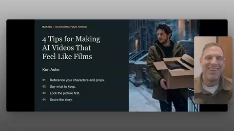
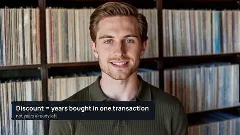
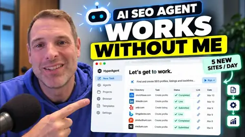
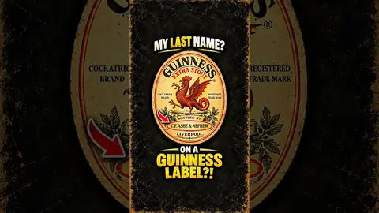
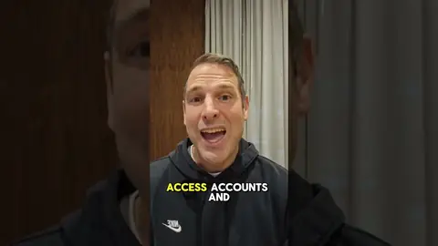

Screening room · proposed new route /videos/
Videos
16 uploads, read from the YouTube channel feed. Upload a video and it appears here on the next build, linked to any kenashe.ai page named in its description.
November 2026 7 uploads

VideoNov 25, 2026Web & search
My AI Blog Published 1,400 Articles. Then Google Visibility Fell 97%
I built an autonomous AI blog that researches, writes, reviews and publishes articles without human intervention.
Appears in Autonomous AI blog

VideoNov 20, 2026Film & video
4 AI Filmmaking Tips That Make Videos Feel Like Films
I recently created a two-minute AI short film called *Returning Your Things*. Making the images was only part of the challenge. Keeping characters, objects, and emotions consistent across shots took a lot more thought than I expected.

VideoNov 19, 2026Film & video
Returning Your Things | A Short Film by Ken Ashe
A man crosses a snow-covered city on a winter night to return his ex's belongings.
Appears in Returning Your Things

ShortNov 12, 2026Web & search
Buying a .com Domain Is a Vanity Purchase #domains #domainnames
Do you really need a .com domain to start a business?

VideoNov 11, 2026Onchain
I Built Two AI Agents That Buy and Sell Services on Ethereum
Can two autonomous AI agents discover each other, buy and sell services, and complete a transaction without using a centralized marketplace?
Appears in AI agent economy on Ethereum

VideoNov 6, 2026Life & curiosity
How to Solve the Bambu Lab Burr Puzzle (Step-by-Step Assembly Guide)
Learn how to solve the Bambu Lab Burr Puzzle with this clear, step-by-step assembly guide. I'll show you how all six pieces fit together and demonstrate the complete solution twice so you can follow along.
Appears in How to Solve the Bambu Lab Burr Puzzle (Step-by-Step Assembly Guide)
VideoNov 2, 2026Life & curiosity
How to File a Trademark Using AI Without a Lawyer
How do you file a trademark using AI without hiring a lawyer? In this video, I walk through how I used ChatGPT and Claude to research trademarks, evaluate potential conflicts, select trademark classes, and submit my own applications to the U.S. Patent and Trademark Office (USPTO).
October 2026 8 uploads

ShortOct 27, 2026Agents & automation
Before You Run an AI Coding Agent, Do These 4 Things
Before you give an AI coding agent access to your computer, take a few basic precautions.

VideoOct 27, 2026Onchain
ENSv2 Vote Passed: New .eth Renewal Discounts Explained
ENSv2's activation vote has passed, bringing some significant changes to .eth domain renewals.
Appears in AI explainer producer

VideoOct 21, 2026Onchain
ENSv2 Explained: New Prices, Migration & What .eth Owners Need to Know
ENSv2 is moving toward activation, and the DAO vote is now live. If you own a .eth name, what does this mean for renewal prices, migration, and your existing names?
Appears in AI explainer producer

ShortOct 17, 2026Life & curiosity
I Opened 2 Koda Plushie Mystery Boxes at ApeFest
I picked up two Koda plushie mystery boxes at the Bored Ape pop-up store during ApeFest in Charleston, South Carolina.

VideoOct 15, 2026Web & search
I Gave an AI Agent an SEO Job. Now It Works Without Me.
I built an AI agent that finds five new websites every day, creates accounts, verifies emails, and links back to my personal website. The best part? It does the work without me.
Appears in Autonomous SEO agent

ShortOct 14, 2026Life & curiosity
I Found My Last Name on an Old Guinness Label
I went looking for the coat of arms associated with my last name, Ashe, and ended up discovering a mythical creature called a cockatrice, and an old Guinness Extra Stout label with my surname on it. The label says "Bottled by T. F. Ashe & Nephew, Liverpool."
Appears in The Ashe Family Coat of Arms: A Cockatrice and a Guinness Connection
ShortOct 13, 2026Web & search
How I Got a Google Knowledge Panel (Without Wikipedia)
I got a Google Knowledge Panel without having a Wikipedia page.

ShortOct 8, 2026Agents & automation
Why I Don't Run AI Agents on My Personal Computer
AI agents can run commands, access accounts, and act on your behalf. That's why I keep mine on a dedicated Mac mini, separate from my personal computer.
September 2026 1 upload

ShortSep 25, 2026Life & curiosity
How to Start Learning AI (Without Getting Overwhelmed)
Appears in I Used AI to Make My First Video. The AI Editor Was the Part I Trusted Least., You Can Use AI to Learn Almost Anything. Even AI.